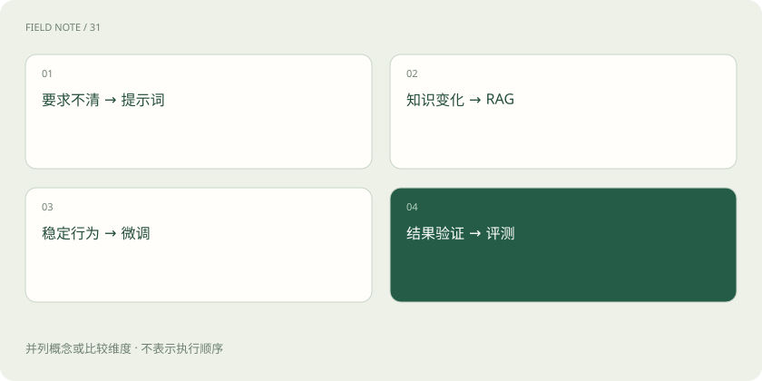

先读哪些知识
先用一个类比理解
写清工作要求是提示词；给参考手册是 RAG；用大量例子培训固定风格是微调。它们可以组合，但不能互相包办。
类比只帮助建立直觉，不等同于技术的完整机制。
一图看懂

知识问题优先看外部资料
如果答案依赖不断变化的制度、库存或订单，把可信数据通过检索和工具接入，通常比频繁训练更容易更新和追溯。实时订单更适合业务接口，不必强行向量化。
行为问题才考虑训练路径
当已有明确任务与足量高质量样例，需要稳定语气、分类边界或任务行为时，可以评估微调。先建立基线，验证提示词与检索已经解决了哪些问题，再衡量训练成本和改进。
系统问题不能靠训练掩盖
接口超时、权限不足、资料缺失与模型答错是不同原因。三种方法都需要评测：以相同题目比较正确性、延迟与成本，并保留未参与调试的测试样本。
放进真实场景
SCENARIO
希望客服按固定格式答复：先约束格式；希望答出最新退款政策：接入文档；大量复杂样本中语气持续不一致：再评估微调。
别踩这个误区
“微调之后就能准确背诵全部企业知识”不是可靠的工程保证。
想一想
每分钟变化的库存应通过微调更新吗？
通常应调用实时业务接口，再让模型解释结果。
关联阅读
资料与边界
本文为原创知识讲解。类比和图示经过简化；示例数字不代表实测或报价。整理日期：2026-11-04。文末列出对应技术的原始资料，具体功能与版本支持请以原文为准。
按完整目录逐篇阅读